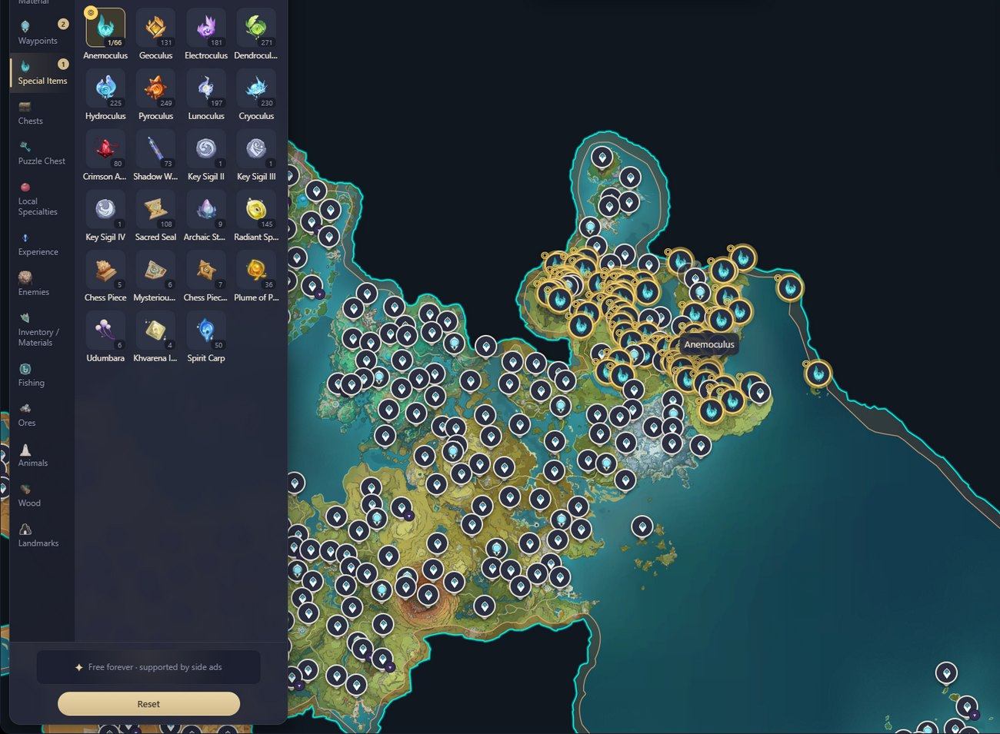
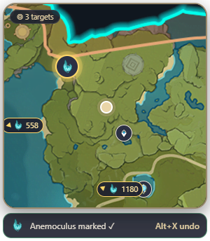
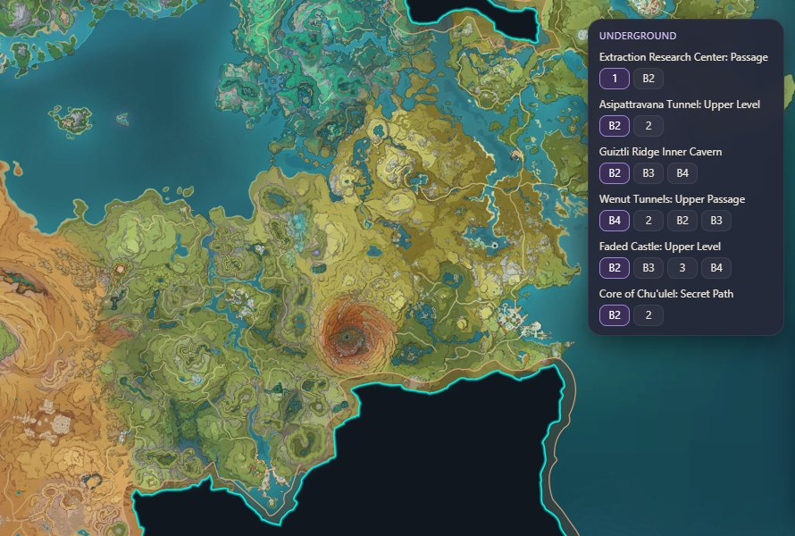
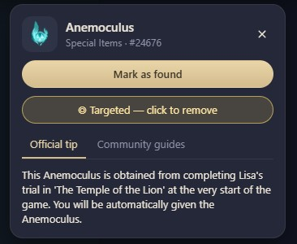

Knows where you are
Reads your minimap from the screen and puts you on the map, no clicking "I'm here".
Free for Windows · v0.4.7
Teyvat Live Map finds you from your minimap and shows every oculus, chest and material around you right over the game. Pick up an oculus and it's marked found by itself.


Features
Live minimap overlay
A small see-through minimap sits on top of Genshin and moves with you. It shows every unfound pin around you, with arrows and distances to targets that are off-screen.
Auto-mark
When the game shows "Obtained", the app reads it and marks the exact oculus you just grabbed, not just the closest one on the map. Works for all eight kinds, from Anemoculus to Lunoculus.
Obtained
Anemoculus × 1
Adventure EXP × 60
Underground
Underground areas show one floor at a time with a floor switcher, the way they work in the game, instead of a pile of layers stacked on top of the world.

Tips & guides
Click any pin for the official tip and community guides. Target it and the minimap points you straight there.

Reads your minimap from the screen and puts you on the map, no clicking "I'm here".
Oculi, chests, puzzles, specialties, enemies, bosses, ores, fishing and more from HoYoLAB's map data.
Pick a character to see where their level-up and talent materials come from.
Show the map, collect, undo or open a guide without leaving Genshin. Mouse side buttons work too.
Import the markers you've already found on AppSample's Genshin map in a minute.
Watches whichever screen Genshin is on, so two-monitor setups just work.
How it works
Download and run the installer. If Windows warns you, click More info → Run anyway.
Choose oculi, chests or a character's materials on the map.
Start Genshin and press the crosshair once. The minimap does the rest.
Teyvat Live Map only looks at the picture on your screen. It never reads or changes the game's files or memory and never presses keys for you.
FAQ
Yes, completely. It's made by one person and kept going by optional tips on Ko-fi.
No. It only looks at the picture on your screen, the same way recording software does: the minimap to find where you are, and the item list on the left to see when you pick up an oculus. It never reads or changes the game's files or memory.
The installer isn't signed with a paid company certificate, so Windows SmartScreen warns about it. Click More info, then Run anyway.
Genshin runs as administrator, and Windows hides key presses aimed at administrator windows from normal apps. Allowing the prompt lets your hotkeys work in game. Everything else works without it.
It watches whichever monitor Genshin is on, and runs on Windows 10 and 11. It's tuned on 1440p and 1080p screens; if tracking struggles on your setup, tell us which resolution you use.
It's built for the game in English, and also accepts small differences in spelling. In any language you can still mark things with the collect hotkey.
No. Teyvat Live Map is a fan-made tool. Map data and icons come from HoYoLAB's public map.
Free, Windows 10 & 11, takes a minute to set up.
Made by one fan